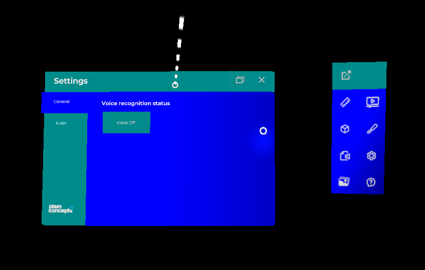
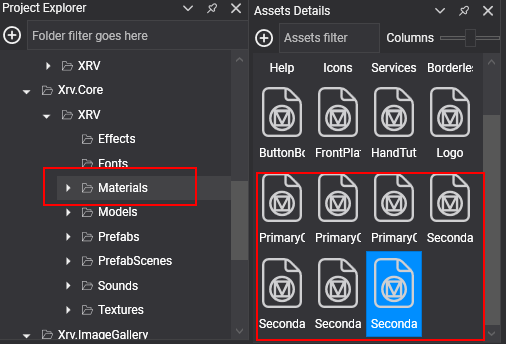
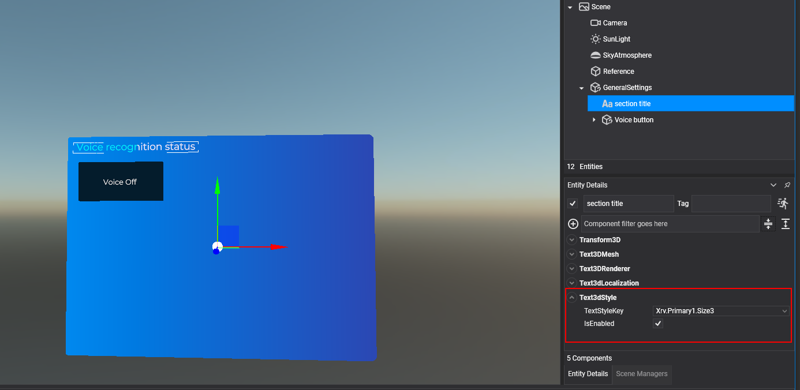

Themes system

The themes system controls the look of an XRV application: a palette of colors, two fonts, and a set of shared text styles. XRV windows, buttons, and menus take their colors and fonts from the current theme, so changing one theme value restyles the whole application at runtime. Access it through XrvService.ThemesSystem. The types live in Evergine.Xrv.Core.Themes and Evergine.Xrv.Core.Themes.Texts.
Theme colors
A theme defines its palette with generic color names:
| Color | Default | Used for |
|---|---|---|
PrimaryColor1 |
#041C2C |
Window title bars, text of light buttons, and the background of selected list items. |
PrimaryColor2 |
#00B5F1 |
Scroll bars. |
PrimaryColor3 |
#EBEBEB |
General texts and the active item of tab controls. |
SecondaryColor1 |
#70F2F8 |
Inactive items of tab controls, back plate of some buttons, selection texts, and some manipulators. |
SecondaryColor2 |
#62CCD5 |
Some manipulators. |
SecondaryColor3 |
#F10A42 |
Back plate of the accept option in confirmation dialogs. |
SecondaryColor4 |
#0F72E8 |
Start of the window front plate gradient, and the plate of dialog buttons. |
SecondaryColor5 |
#552098 |
End of the window front plate gradient. |
XRV provides one material per theme color. The themes system changes these materials at runtime to match the theme, and because material instances are shared by every MaterialComponent that uses them, the change applies to the whole application. Use these materials in your own UI elements when you want them to follow the theme. Materials you create yourself are not modified.

Change theme colors
ThemesSystem.CurrentTheme holds the active Theme. Change its colors, or assign a new Theme instance; a new instance starts with the XRV default values.
using Evergine.Common.Graphics;
var theme = this.xrvService.ThemesSystem.CurrentTheme;
theme.PrimaryColor1 = Color.DarkCyan;
theme.SecondaryColor4 = Color.Blue;
theme.SecondaryColor5 = Color.DarkBlue;
This code produces the look shown at the top of this page. You can keep several Theme instances and switch between them by assigning CurrentTheme.
Change theme fonts
Themes also define two fonts:
| Font | Default | Used for |
|---|---|---|
PrimaryFont1 |
Montserrat SemiBold | Window titles, buttons, section labels, and tab items. |
PrimaryFont2 |
Montserrat Regular | Content texts, the hand menu, and window buttons. |
Add a font asset to your project and assign its ID:
theme.PrimaryFont1 = EvergineContent.Fonts.MyCustomFont_ttf;
theme.PrimaryFont2 = EvergineContent.Fonts.MyCustomFont_ttf;
EvergineContent.Fonts.MyCustomFont_ttf stands for the ID of your font asset.
Shared text styles
Text styles give your 3D texts a uniform look. A style defines a font, a scale, and a color, and you apply it to any number of texts by its key.
TextStyle property |
Type | Description |
|---|---|---|
ThemeFont |
ThemeFont? |
Theme font used by the style. |
Font |
Guid? |
Font asset ID, used when ThemeFont is null. |
TextScale |
float |
Scale of the text. |
ThemeColor |
ThemeColor? |
Theme color used by the style. |
TextColor |
Color? |
Explicit color, used when ThemeColor is null. |
Apply a style with these components, setting their TextStyleKey:
Text3dStyle: applies a style to aText3DMesh.ButtonTextStyle: applies a style to the text of a button with aStandardButtonConfigurator.ToggleButtonTextStyle: applies a style to one state of aToggleButton. SetTargetStateand add one component per state.
The components can also replace the style color: OverrideThemeColor with ExplicitThemeColor uses another theme color, and OverrideColor with ExplicitColor uses a fixed color.

XRV defines these styles. All of them use theme fonts and colors, and their keys are constants of DefaultTextStyles:
| Style key | Constant | Font | Scale | Color |
|---|---|---|---|---|
Xrv.Primary1.Size1 |
XrvPrimary1Size1 |
PrimaryFont1 |
0.012 | PrimaryColor3 |
Xrv.Primary1.Size2 |
XrvPrimary1Size2 |
PrimaryFont1 |
0.01 | PrimaryColor3 |
Xrv.Primary1.Size3 |
XrvPrimary1Size3 |
PrimaryFont1 |
0.008 | PrimaryColor3 |
Xrv.Primary2.Size1 |
XrvPrimary2Size1 |
PrimaryFont2 |
0.007 | PrimaryColor3 |
Xrv.Primary2.Size2 |
XrvPrimary2Size2 |
PrimaryFont2 |
0.006 | PrimaryColor3 |
Xrv.Primary2.Size3 |
XrvPrimary2Size3 |
PrimaryFont2 |
0.005 | PrimaryColor3 |
Note
Text styles are read when the application starts. Changing a style at runtime has no effect.
Add or modify text styles
Implement ITextStyleRegistration to add styles or change the default ones. XRV finds every implementation in your assemblies at startup and calls its Register method with the dictionary of styles.
using System.Collections.Generic;
using Evergine.Common.Graphics;
using Evergine.Xrv.Core.Themes;
using Evergine.Xrv.Core.Themes.Texts;
public class MyTextStylesRegistration : ITextStyleRegistration
{
public void Register(Dictionary<string, TextStyle> registrations)
{
// Make the biggest default style a little bigger.
if (registrations.TryGetValue(DefaultTextStyles.XrvPrimary1Size1, out var defaultStyle))
{
defaultStyle.TextScale = 0.015f;
}
// Add a style with a fixed color that does not follow the theme.
registrations["RedStyle"] = new TextStyle
{
ThemeFont = ThemeFont.PrimaryFont1,
TextScale = 0.013f,
TextColor = Color.Red,
};
}
}
React to theme changes
The themes system does not update your own materials, but it tells you when the theme changes. ThemesSystem.ThemeUpdated is raised with a ThemeUpdatedEventArgs:
| Property | Description |
|---|---|
Theme |
The theme that is being applied. |
UpdatedColor |
The color that changed, when a single color of the current theme changed. null when a new theme was assigned. |
IsNewThemeInstance |
true when a new theme instance was assigned to CurrentTheme. |
The following component tints a custom material when the theme changes:
using Evergine.Framework;
using Evergine.Xrv.Core;
using Evergine.Xrv.Core.Themes;
public class ThemedHighlight : Component
{
[BindService]
private XrvService xrvService = null;
private ThemesSystem Themes => this.xrvService.ThemesSystem;
protected override bool OnAttached()
{
bool attached = base.OnAttached();
if (attached)
{
this.Themes.ThemeUpdated += this.OnThemeUpdated;
}
return attached;
}
protected override void OnDetached()
{
base.OnDetached();
this.Themes.ThemeUpdated -= this.OnThemeUpdated;
}
private void OnThemeUpdated(object sender, ThemeUpdatedEventArgs args)
{
if (args.IsNewThemeInstance || args.UpdatedColor == ThemeColor.PrimaryColor1)
{
var color = args.Theme.GetColor(ThemeColor.PrimaryColor1);
// Apply the color to your own material here.
}
}
}